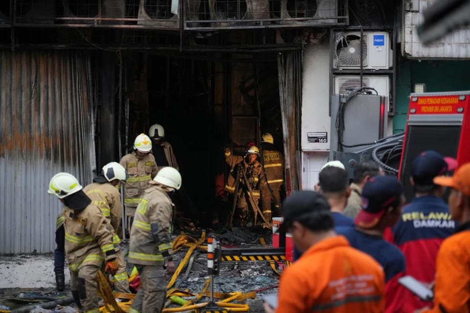

世界苦茶12月10日新闻 | 29条 | 中俄战机靠近日韩防空识别区

中俄战机靠近日韩防空识别区 | 华融国际前总经理被执行死刑 | 王毅称台湾地位已被七重锁定 | 中国22月乘用车销量继续下滑
苦茶数据
美元兑人民币：7.06（昨日7.06，前日7.06）
美元兑日元：156.71（昨日156.28，前日155.06）
上证指数：3900（昨日3909，前日3927）
标普500指数：6840（昨日6846，前日6870）
比特币：92390（昨日90580，前日91070）
布伦特原油：62.19（昨日62.43，前日63.88）
中国新闻
• 华融国际原总经理白天辉被执行死刑。
中国华融国际控股原总经理白天辉星期二被执行死刑，成为第二名因受贿罪被处死的“华融系”高管。据新华社报道，去年5月，天津市第二中级法院以受贿罪对白天辉判处死刑。白天辉上诉后，天津市高级法院于今年2月裁定驳回上诉，维持原判，并依法报请最高法院核准。最高法经复核确认，2014年至2018年，白天辉利用在华融国际控股以及中国华融国际控股两家公司多个职务上的便利，为有关单位在项目收购和企业融资等方面谋取利益，非法收受财物，共计11.08亿余元。最高法认为，白天辉受贿数额特别巨大，犯罪情节特别严重，社会影响特别恶劣，罪行极其严重，依法应予严惩。
• 荒诞的全网最忙五人组。
张吉惟、林国瑞、林玟书、林雅南、江奕云，这五“人”组成的神秘天团，最近在中国互联网上一夜蹿红，上演了一场荒诞的全网大巡演。事缘12月初湖北省竹溪县住房和城乡建设局发布的一则招标公告，这份关于机械设备租赁采购项目的中标结果告示提到，评审小组成员包括张吉惟、林国瑞、林玟书、林雅南、江奕云。有眼尖的网民发现，这五个名字竟然和百度文库《10000中国普通人名大全》中列出的头五个名字完全一致，连排序都没有改动，巧合得令人怀疑评审小组人员的真实性。
• 上海之后 滨崎步澳门演唱会也被取消。
滨崎步澳门演唱会原定于2026年1月10日举行，然而今日传来消息，该演唱会将会取消。她向粉丝们致歉，并说“我们的情谊永恒”。广告 日本知名歌手滨崎步在社交媒体平台Instagram宣布了这个消息，并对那些盼望看到演唱会的支持者致歉。但她也说：“我不会放弃未来，我们的情谊永恒。” 滨崎步原定11月29日在上海举办演唱会，但在演出前一天遭强制取消。11月29日，滨崎步及其团队在完全没有观众的情况下进行了演出，并公开了这场“无观众演唱会”的画面。
• 德国外长广州行：看到与中国建设性合作机会。
总理梅尔茨计划在2026年第一季度访华。在北京经历了艰难的政治会谈后，德国外长瓦德富尔继续前往中国南方访问。瓦德富尔周二在广州表示，他看到与中国建设性合作的机会。广州是瓦德富尔此次中国访问的最后一站。德国总理梅尔茨也将在明年访华。追随默克尔的足迹参观“隐形冠军”工厂 在广州，瓦德富尔参观了德国隧道掘进机世界领军企业海瑞克的重要生产基地。他说，“德国制造”的产品在中国非常受关注。
• 东京“监测”北京的反弹；台湾封禁RedNote：南华早报每日要闻。
广告 东京“密切监视”来自北京的反弹；台湾封禁RedNote：南华早报每日要闻 从辽宁号航母的独特航线到亚洲飞人退役，以下是今日报道摘要 阅读时间：2分钟 为什么您可以信赖南华早报 赶上今日南华早报关于中国的一些重磅报道。如果您想查看更多我们的报导，请考虑订阅。1.日本首相向议员表示正“密切监视”来自中国的反弹 在引发与中国外交风暴的台湾应急言论一个月后，日本首相高市早苗表示，日本将“密切监视”事态并作出适当回应。2.台湾封禁RedNote适得其反，推动该大陆应用下载量飙升 台湾对大陆社交应用RedNote的封禁在岛内引发强烈反弹，用户纷纷通过变通方法访问该平台，使其成为下载量领先的应用。
印太新闻
• 王毅称台湾地位已被七重锁定 台外交部：锁定7000次也不会成真。
中国大陆外交部长王毅强调，台湾地位已经被《开罗宣言》《波茨坦公告》等“七重锁定”。但台湾外交部反驳称，台湾地位“即便锁定700次或7000次也不会成真”。根据大陆外交部星期二发布的新闻稿，王毅星期一在北京与德国外长瓦德福会谈时，就台湾问题的历史事实和法理经纬作全面阐述。王毅引用和列举七项历史与法理依据，包括1943年的《开罗宣言》规定日本战后把台湾归还中国，1945年的《波茨坦公告》规定必须实施《开罗宣言》条款，1971年联合国大会的2758号决议恢复中华人民共和国在联合国代表权，并驱逐台湾代表，以及1972年的《中日联合声明》规定。
• 瞄准中国大陆，台湾通过加强对破坏海底电缆的处罚。
随着台湾通过加重破坏海底电缆刑罚，目光聚焦中国大陆。岛内立法机关采取行动，以遏制日益增多的蓄意破坏行为，该行为现可判处最高七年有期徒刑。台湾立法院周二通过的法律修订出台之际，岛内指控北京破坏其海底电缆，称此类行为为“灰色地带”施压手段。大陆当局则强烈否认任何牵连，称这些事件是“普通海事事故”，并指责台北夸大其词。根据此次对电信、电力、燃气、供水、港口及航运等法律的修订，蓄意破坏海底基础设施者可处一至七年有期徒刑，并处最高新台币一千万元罚款。台湾当局也扩大了没收权：任何用于此类犯罪的船只、工具或机械，不论所有权如何，均可被查扣、拍卖、拆解或改作公用。此外，修订后的法律规定船舶必须开启自动识别系统。
• 雅加达办公火灾已致至少22人死亡，警方证实。
雅加达一办公楼火灾已致至少22人死亡，警方证实 印尼首都一座办公楼发生火灾，造成至少22人死亡，当局仍在搜寻伤亡者。雅加达市警察局长苏萨蒂奥·普尔诺莫·乔德罗表示，这起发生在周二下午的火灾发生在一栋七层楼的建筑内，事发时一些工作人员正在午餐。警方相信火灾由一楼的一块电池爆炸引发，火势随后向上蔓延。该楼内有一家无人机制造公司入驻。苏萨蒂奥称，大多数遇难者为女性，其中一人怀孕，死因很可能是因吸入浓烟窒息而非烧伤。浓烟自上层涌出，消防人员出动了28台消防车和约100名消防员，镜头显示被困员工正被云梯救出。
• 新西兰称，在东亚有7艘中国军舰尾随我方海军舰艇。
新西兰表示，7艘中国军舰在其东亚任务期间尾随我方海军舰艇。惠灵顿方面称，该舰将执行情报监视和威慑活动，以加强联合国安理会对朝鲜因其核与弹道导弹计划实施的制裁。新西兰国防军周一在一份声明中表示，极地级补给舰HMNZS奥特亚罗阿已与盟友一道部署到东海和黄海。“在行动期间，该舰遭到了七艘不同的中华人民共和国解放军军舰的尾随，后者全程保持了安全且专业的距离，”声明称，但未说明具体时间和地点。路透社报道，奥特亚罗阿于11月5日经台湾海峡自南海驶向北亚地区，并被中国舰艇跟随。惠灵顿周一表示，该舰此行旨在执行情报监视与威慑任务，以支持联合国安理会针对朝鲜核与弹道导弹项目实施的制裁。
科技新闻
• 欧盟对谷歌AI展开反垄断调查。
欧盟对谷歌AI展开反垄断调查 2025年12月9日欧盟的调查将聚焦两个方面：一是谷歌是否在未充分支付报酬的情况下，使用YouTube视频来训练其生成式人工智能模型，二是是否未给予上传者拒绝其内容被使用的选择。欧盟周二宣布展开对谷歌的调查。调查将评估谷歌是否在未给予适当补偿的情况下，使用媒体和其他出版机构在网上发布的内容来训练和提供人工智能服务，从而违反反垄断法规。欧盟委员会表示，调查将关注这家美国科技巨头是否通过向出版商和内容创作者施加不公平条款，或通过为自己提供对这些内容的优先访问权，从而扭曲竞争。
• 美国料将对中国生物科企和投资实施新限制。
美国国会料将通过一项跨党派共同支持的法案，以阻止部分中国生物科技公司获得政府资助的合同，并授权特朗普政府禁止美国投资中国人工智能和先进电脑运算领域。美国参众议院谈判代表上周末商定的最新版《国防授权法案》，纳入《生物安全法案》和《打击中国法案》，分别针对中国生物科技公司和美国在军事应用科技领域的对华投资。法案删除了美国晶片巨企英伟达强烈反对的一项条款，即要求美国晶片企业在对华出售人工智能晶片前，必须优先满足美国客户需求。法案必须获得美国参众两院表决通过后，才提交给总统特朗普签署成法。新版《生物安全法案》要求管理和预算办公室禁止让列入名单的生物科技公司在一年内获得联邦合同，补助金或贷款。
经济新闻
• 中国11月车辆销量继续下滑 但出口创新高。
随着需求持续减弱，中国11月车辆销量连续第二个月下降。周一公布的数据显示，上个月乘用车零售销量同比下降8.1%，至223万辆。乘用车零售销量环比下降1.1%。乘联分会表示，11月新能源汽车零售销量同比增长4.2%，至130万辆。特斯拉上个月在华销量增长9.9%，至86700辆，而10月为下降。与往年同期相比，11月中国乘用车的产量、出口和批发销量均创下新高。此外乘联分会表示，当月中国汽车出口量也创下新纪录。乘用车出口量同比增长52%，至601000辆，其中电动汽车和混合动力汽车的出口量同比增长两倍多，达到284000辆。
• 微软将在印度投资175亿美元用于人工智能和云基础设施。
微软周二宣布将在未来四年内对印度进行迄今为止在亚洲规模最大的投资，总额为175亿美元，以推进该国的云和人工智能基础设施。首席执行官萨蒂亚·纳德拉在新德里会见印度总理纳伦德拉·莫迪后，在X发布帖文披露了这一消息。纳德拉表示，微软此次投资旨在帮助印度构建其人工智能未来所需的“基础设施，技能和主权能力”。该公告凸显了主要科技公司在印度扩张的全球竞争日益激烈，印度已成为全球增长最快的数字市场之一。今年10月，谷歌曾表示将在未来五年内向印度投资150亿美元，在该国设立首个人工智能中心。该中心位于南部的维沙卡帕特南，将成为谷歌全球最大的中心之一。
• 特朗普否认曾承诺为陷入困境的匈牙利总理奥尔班提供阿根廷式救助。
美国总统唐纳德·特朗普在接受POLITICO采访时表示，他并未向匈牙利总理维克多·欧尔班提供资金援助，这与他这位长期盟友声称双方达成协议的说法相悖。欧尔班上月曾前往华盛顿会见美方领导人，并在访问后表示美国已同意为布达佩斯提供“财政屏障”。“不，我没有答应他，但他确实提出了这个要求，”特朗普在接受POLITICO的达莎·伯恩斯为特别节目《对话》所作的采访中表示，该节目于周二播出。
• “为生存而战”：福特联手雷诺打造可与中国品牌抗衡的电动汽车。
雷诺和福特周二表示，将联手为欧洲市场开发小型、价格更低的福特品牌电动车，以抵御来自中国对手日益增长的竞争。福特首席执行官吉姆·法利周一在巴黎、宣布前向记者表示：“我们知道自己在这个行业是在为生存而战，”他在谈到福特对来自更廉价的中国竞争对手威胁的应对时说。“没有比欧洲更好的例子了。” 欧洲传统车企正面临来自比亚迪、长安和小鹏等中国对手的涌入。作为福特-雷诺合作的一部分，计划中的两款小型电动车中第一款将在法国北部的一家雷诺工厂生产，并将于2028年进入欧洲经销商展厅。法利表示，这些车将比福特在美国市场计划的任何车型都小，并将填补该车企产品阵容中的空白。
• 特朗普威胁对墨西哥加征更高关税。
周一，特朗普总统表示墨西哥对美国农民不公平，并威胁要动用他最喜欢的经济武器：提高关税。特朗普在他的社交平台 Truth Social 上发文称，墨西哥违反了与美国的水资源条约，损害了德州农民灌溉农作物和牲畜的能力。“到目前为止，墨西哥没有回应，这对我们理应获得这些急需水源的美国农民非常不公平，”特朗普周一写道。“这就是为什么我已授权准备文件，如果这些水不立即释放，我将对墨西哥征收5%的关税。” 特朗普所指的条约是1944年签署的《科罗拉多河与蒂华纳河及格兰德河水利利用条约》。该条约除其他规定外，要求美国每年从格兰德河支流至少获得平均35万英亩英尺的水。
俄乌战争
• 泽连斯基表示，如果合作伙伴能确保安全，他准备在战争期间举行选举。
乌克兰总统弗拉基米尔·泽连斯基12月9日告诉记者，如果美国和欧洲伙伴帮助确保安全，乌克兰可能在俄罗斯全面战争期间举行选举。泽连斯基的表态出现在美国总统唐纳德·特朗普近期关于乌克兰选举的言论之后。被问及时，特朗普在Politico于12月9日播出的采访中表示，“现在是”乌克兰举行选举的时候。泽连斯基表示，此类举措取决于安全形势，因为俄罗斯仍然定期袭击该国，还取决于士兵的投票能力和立法问题。“我现在公开请求并表示，希望美国帮助我。与我们的欧洲伙伴一道，我们可以确保举行选举所需的安全。
• 立陶宛因来自白俄罗斯的气球宣布进入紧急状态。
立陶宛就白俄罗斯气球事件宣布进入紧急状态 立陶宛政府已宣布“全国紧急状态”，以应对白俄罗斯接连派出携带走私香烟的气球入侵。总理英加·鲁吉涅讷将这些气球入侵谴责为白俄罗斯发动的“混合攻击”，认为对国家安全和民用航空构成真实风险。官员表示，仅在今年，约有600个与走私有关的气球和近200架无人机进入立陶宛领空，导致维尔纽斯机场多次关闭。白俄罗斯领导人亚历山大·卢卡申科否认对此负有责任，称此事已被立陶宛“政治化”。立陶宛既是欧盟也是北约成员国。立陶宛此次宣布的“紧急状态”低于全面戒严——全面戒严最后一次是在2022年俄罗斯全面入侵乌克兰后实施的。
• 2架中国战机、7架俄罗斯战机进入靠近日本的韩国防空识别区。
韩国军方表示，周二有来自中国和俄罗斯的军机在未通报的情况下进入韩国防空识别区，促使其出动战机。数小时后，中国国防部表示，中俄当天在东海和西太平洋上空开展了第十次联合战略巡航。国防部未提供细节，仅称演习在两军年度防务合作计划框架内进行。据韩国联合参谋本部称，七架俄军和两架中方军机先后进入并离开了位于日本海及东海上空的韩国防空识别区。联合参谋本部在周二早间的声明中称，“并未侵犯我方领空”。
• 教宗批评美国试图“瓦解”美欧联盟，坚称欧洲应在乌克兰和平中发挥作用。
教皇批评美国试图“分裂”美欧联盟，坚称欧洲应在乌克兰和平进程中发挥作用 罗马 — 教皇列奥十四周二坚称，任何关于乌克兰的和平协议都必须有欧洲的参与，并批评他所称的特朗普政府试图“分裂”长期以来的美欧同盟。列奥在会见乌克兰总统弗拉基米尔·泽连斯基后对记者表示，泽连斯基正在进行另一轮访问，旨在争取欧洲对基辅的支持。这位美国出生的教皇说，他们讨论了实现停火的必要性以及梵蒂冈促成被俄罗斯当局带走的乌克兰儿童回归的努力。
• 乌克兰人在俄罗斯声称已占领的城市升旗，向BBC表明战斗仍在继续。
乌克兰人在被俄罗斯声称已占领的城市升旗向BBC表明战斗仍在继续 波克罗夫斯克尚未陷落。尽管普京近日声称俄军已控制该市，但事实并非如此。毫无疑问，乌克兰在这座东部关键城市已节节失地。对俄罗斯而言，波克罗夫斯克是通往控制整个顿巴斯的又一个踏脚石。但乌克兰需要证明其仍具备抵抗能力。在一处远离前线的乌克兰指挥所，命令通过无线电快速接连下达。士兵们盯着数十路无人机实时画面，协调对城内俄方阵地的打击。斯卡拉突击团团长尤里热切地向我们证明乌克兰仍控制着城北——以此表明克里姆林宫关于已占领波克罗夫斯克的说法是谎言。无线电中，他们让两名士兵从一栋楼里暂时露面。
世界新闻
• 巴西通过法律，加强对性别暴力女性受害者的保护措施。
巴西总统路易斯·伊纳西奥·卢拉·达席尔瓦签署生效一项法律，强化对遭受性别暴力的女性的保护措施，此举受到女权活动人士的欢迎，但她们也要求增加预防资金。该法律出台之际，巴西对创纪录的针对女性的暴力案件以及一系列震惊全国并在周日引发大规模示威的高调事件愤怒情绪高涨。周一在巴西官方公报上刊登的这项法律允许法官采取保护受害者的措施，例如暂停或限制持枪权、将施暴者从受害者家中驱逐以及禁止与受害者接触。被要求遵守保护措施的人现在还将被强制佩戴脚踝监视器。
• “不可接受”：德国的梅尔茨抨击特朗普有争议的欧洲文件。
德国总理弗里德里希·默茨周二表示，美国政府新发布的《国家安全战略》从欧洲的角度来看有些部分很糟糕。当被问及这一地缘政治战略以及它将如何影响跨大西洋关系时，默茨对记者说：“有些可以理解，有些能说得通，但有些从欧洲的角度对我们来说不可接受。我认为美国人现在没有必要想来拯救欧洲的民主。如果真的需要被拯救，我们自己能应付。
• 密苏里州反对特朗普支持的选区重划者提交请愿书，要求就此进行公投。
密苏里州反对由特朗普支持的重划选区人士提交请愿书，要求公投 杰斐逊城——反对密苏里州新国会选区图的人士周二提交了数千份请愿签名，要求就一项由总统唐纳德·特朗普支持，旨在帮助共和党在明年选举中保住微弱多数的重划选区方案举行全州公投。请愿活动的组织者称，他们向州务卿办公室递交了超过30万份签名——远超约11万份的门槛，这一数量足以在下次公投举行前暂停新众议院选区的生效。签名仍需由选举当局正式核实，共和党籍州务卿丹尼·霍斯金斯也可能裁定该公投请愿违宪。预计将出现法律争执。
• 法国极右希望重新开放妓院。
玛丽娜·勒庞的政党希望法国重新开放由妓女直接经营的妓院。国民联盟的一位知名议员让-菲利普·唐吉在接受法国媒体一系列采访时表示，该党将很快提交一项法案，允许以合作社形式重新开放妓院。“妓女将成为她们王国中的女皇，”唐吉对法国RTL电台说。
• 自四年前首次赢得工会以来，星巴克员工仍未达成劳动协议。
奥古斯特·科德在2021年为首家通过工会化的星巴克门店工作。但在那次投票四年后，他和在纽约布法罗的同事们仍在等待他们的工会合同。“我原以为我们早就会看到合同了，”科德对CNN说。“想到四年后我们还没有合同，确实令人沮丧。我没想到会到这一步。” 周二是星巴克首次工会胜利的周年纪念。那里的工会组织活动成为近年来美国劳工运动最重大的一次成功之一。疫情期间对工作条件的担忧推动了以年轻工人为主、普遍支持工会的星巴克员工加入工会；这部分员工在星巴克劳动力中占很大比重。根据工会“星巴克工人联合”，自四年前首次投票以来，约有560家星巴克门店投票决定由工会代表。但尽管势头强劲，仍没有达成劳资合同。
• 欧盟达成协议大幅削减环保规则，为冯德莱恩的放松监管推动取得重大胜利。
在周一欧盟机构就一项削减环保规定的提案达成协议后，欧洲超过80%的公司将免于履行环境报告义务。该协议是欧洲委员会主席乌尔苏拉·冯德莱恩在其第二任期内推动为企业削减繁文缛节的重要立法胜利之一。然而，这一胜利也付出了政治代价：该案将促成她连任的联盟推到濒临瓦解的边缘，并导致她所属的中间偏右政党——欧洲人民党与极右势力联手，才促成协议通过。
• 捷克新任总理巴比什或将加剧布鲁塞尔的民粹主义困局。
当右翼亿万富翁安德烈·巴比什今天出任捷克总理时，欧洲的民粹主义担忧将加剧。捷克总统皮特尔·帕维尔在解决了与候任总理旗下集团阿格罗菲特相关的长期利益冲突问题后，将任命巴比什出任该职。巴比什及其未来政府在布鲁塞尔引发恐慌，反对者担心他可能在欧洲层面建立的联盟会把中欧推向反建制方向。若与匈牙利的维克多·欧尔班和斯洛伐克的罗伯特·菲科联手，巴比什有可能在布鲁塞尔处理关键议题时阻塞立法机制。
• 丹麦从欧盟移民问题的弃儿转变为领跑者。
在多年因对移民问题采取强硬立场而被视为例外后，丹麦表示终于说服了欧盟其他成员国接受其强硬做法。周一，欧洲司法与内政部长批准了新措施，允许欧盟国家遣返被拒绝的寻求庇护者、在海外设立受理中心并在本境外创建遣返枢纽——这些正是哥本哈根长期倡导的做法。推动本次移民谈判、在丹麦担任欧盟理事会为期六个月轮值主席国期间负责此事的中左翼融合事务部长拉斯穆斯·斯托克隆德表示，这项协议“酝酿已久”。